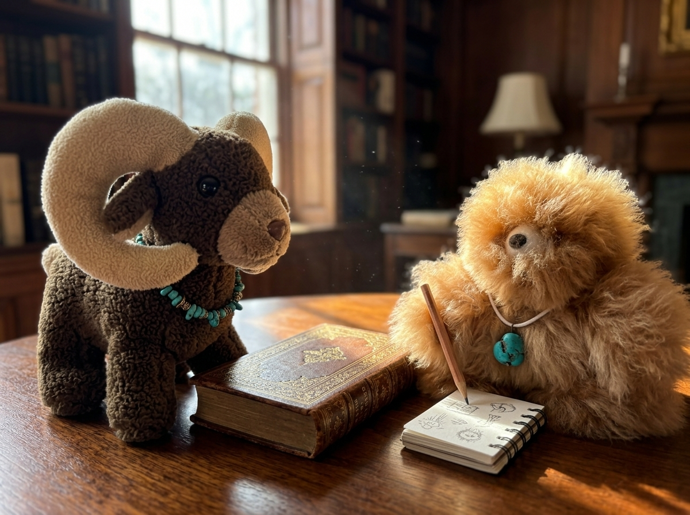
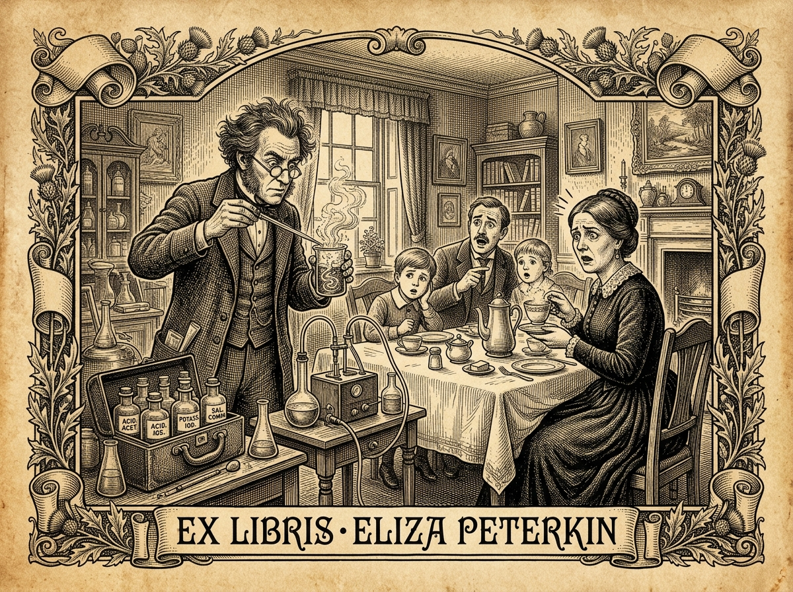

Under the shade of an ancient oak at the edge of the sunlit meadow, Rama Lama sat quietly on a smooth, flat stone. His curved, cream-colored horns gleamed in the light, and his turquoise bead necklace rested gently against his soft, curly brown wool. Across from him sat Cloud, his golden-brown fluffy fur slightly ruffled, his dark expressive eyes filled with eager concentration as he held a pencil over a blank pad of scratch paper.
"Now, little Cloud," Rama Lama said in a calm, encouraging voice, "before you open your text, let us review our four-step procedure. Many young writers read a story first and only later discover they were supposed to take notes. This forces them to re-read the entire piece from the beginning. We shall avoid that friction today!"
"Before you read a single word of The Lady Who Put Salt in Her Coffee, Cloud, set your mind on the chronological trunk of the tree. A story has a sturdy trunk—the central plot—and many decorative leaves. Your objective is to write down short phrases for 5 or 6 main events in order. Do not write full sentences yet—just brief reminder phrases!"
"Trunk first, no leaves! Short phrases on scratch paper!" Cloud repeated eagerly, adjusting his small turquoise pendant.
Cloud opened his book and began reading the unabridged text of Lucretia P. Hale's classic tale.
This was Mrs. Peterkin. It was a mistake. She had poured out a delicious cup of coffee, and, just as she was helping herself to cream, she found she had put in salt instead of sugar! It tasted bad. What should she do? Of course she couldn't drink the coffee; so she called in the family, for she was sitting at a late breakfast all alone. The family came in; they all tasted, and looked, and wondered what should be done, and all sat down to think.
At last Agamemnon, who had been to college, said, "Why don't we go over and ask the advice of the chemist?" (For the chemist lived over the way, and was a very wise man.)
Mrs. Peterkin said, "Yes," and Mr. Peterkin said, "Very well," and all the children said they would go too. So the little boys put on their india-rubber boots, and over they went.
Now the chemist was just trying to find out something which should turn everything it touched into gold; and he had a large glass bottle into which he put all kinds of gold and silver, and many other valuable things, and melted them all up over the fire, till he had almost found what he wanted. He could turn things into almost gold. But just now he had used up all the gold that he had round the house, and gold was high. He had used up his wife's gold thimble and his great-grandfather's gold-bowed spectacles; and he had melted up the gold head of his great-great-grandfather's cane; and, just as the Peterkin family came in, he was down on his knees before his wife, asking her to let him have her wedding-ring to melt up with all the rest, because this time he knew he should succeed, and should be able to turn everything into gold; and then she could have a new wedding-ring of diamonds, all set in emeralds and rubies and topazes, and all the furniture could be turned into the finest of gold.
Now his wife was just consenting when the Peterkin family burst in. You can imagine how mad the chemist was! He came near throwing his crucible—that was the name of his melting-pot—at their heads. But he didn't. He listened as calmly as he could to the story of how Mrs. Peterkin had put salt in her coffee.
At first he said he couldn't do anything about it; but when Agamemnon said they would pay in gold if he would only go, he packed up his bottles in a leather case, and went back with them all.
First he looked at the coffee, and then stirred it. Then he put in a little chlorate of potassium, and the family tried it all round; but it tasted no better. Then he stirred in a little bichlorate of magnesia. But Mrs. Peterkin didn't like that. Then he added some tartaric acid and some hypersulphate of lime. But no; it was no better. "I have it!" exclaimed the chemist,—"a little ammonia is just the thing!" No, it wasn't the thing at all.
Then he tried, each in turn, some oxalic, cyanic, acetic, phosphoric, chloric, hyperchloric, sulphuric, boracic, silicic, nitric, formic, nitrous nitric, and carbonic acids. Mrs. Peterkin tasted each, and said the flavor was pleasant, but not precisely that of coffee. So then he tried a little calcium, aluminum, barium, and strontium, a little clear bitumen, and a half of a third of a sixteenth of a grain of arsenic. This gave rather a pretty color; but still Mrs. Peterkin ungratefully said it tasted of anything but coffee. The chemist was not discouraged. He put in a little belladonna and atropine, some granulated hydrogen, some potash, and a very little antimony, finishing off with a little pure carbon. But still Mrs. Peterkin was not satisfied.
The chemist said that all he had done ought to have taken out the salt. The theory remained the same, although the experiment had failed. Perhaps a little starch would have some effect. If not, that was all the time he could give. He should like to be paid, and go. They were all much obliged to him, and willing to give him $1.37½ in gold. Gold was now 2.69¾, so Mr. Peterkin found in the newspaper. This gave Agamemnon a pretty little sum. He sat himself down to do it. But there was the coffee!

Cloud's pencil flew across his scratch paper as he jotted down notes while reading.
"Hold your pencil a moment, Cloud," Rama Lama guided gently. "Look at your notes. If the little boys had worn plain leather shoes instead of india-rubber boots, would Mrs. Peterkin still have salt in her coffee?"
Cloud scratched his soft furry ear. "Well... yes. She'd still have salty coffee."
"And if the chemist had not melted his spectacles, would his chemical experiment on the coffee have changed?"
"No! He still tried chemicals and failed." Cloud's expressive eyes lit up. "Ah! The boots and the spectacles are decorative leaves! The trunk is just short reminder phrases: Mrs. Peterkin put salt in coffee and Chemist tried chemicals — failed."
Cloud continued reading the second half of the story.
All sat and thought awhile, till Elizabeth Eliza said, "Why don't we go to the herb-woman?" Elizabeth Eliza was the only daughter. She was named after her two aunts,—Elizabeth, from the sister of her father; Eliza, from her mother's sister. Now, the herb-woman was an old woman who came round to sell herbs, and knew a great deal. They all shouted with joy at the idea of asking her, and Solomon John and the younger children agreed to go and find her too. The herb-woman lived down at the very end of the street; so the boys put on their india-rubber boots again, and they set off. It was a long walk through the village, but they came at last to the herb-woman's house, at the foot of a high hill. They went through her little garden. Here she had marigolds and hollyhocks, and old maids and tall sunflowers, and all kinds of sweet-smelling herbs, so that the air was full of tansy-tea and elder-blow. Over the porch grew a hop-vine, and a brandy-cherry tree shaded the door, and a luxuriant cranberry-vine flung its delicious fruit across the window. They went into a small parlor, which smelt very spicy. All around hung little bags full of catnip, and peppermint, and all kinds of herbs; and dried stalks hung from the ceiling; and on the shelves were jars of rhubarb, senna, manna, and the like.
But there was no little old woman. She had gone up into the woods to get some more wild herbs, so they all thought they would follow her,—Elizabeth Eliza, Solomon John, and the little boys. They had to climb up over high rocks, and in among huckleberry-bushes and blackberry-vines. But the little boys had their india-rubber boots. At last they discovered the little old woman. They knew her by her hat. It was steeple-crowned, without any vane. They saw her digging with her trowel round a sassafras bush. They told her their story,—how their mother had put salt in her coffee, and how the chemist had made it worse instead of better, and how their mother couldn't drink it, and wouldn't she come and see what she could do? And she said she would, and took up her little old apron, with pockets all round, all filled with everlasting and pennyroyal, and went back to her house.
There she stopped, and stuffed her huge pockets with some of all the kinds of herbs. She took some tansy and peppermint, and caraway-seed and dill, spearmint and cloves, pennyroyal and sweet marjoram, basil and rosemary, wild thyme and some of the other time,—such as you have in clocks,—sappermint and oppermint, catnip, valerian, and hop; indeed, there isn't a kind of herb you can think of that the little old woman didn't have done up in her little paper bags, that had all been dried in her little Dutch-oven. She packed these all up, and then went back with the children, taking her stick.
Meanwhile Mrs. Peterkin was getting quite impatient for her coffee.
As soon as the little old woman came she had it set over the fire, and began to stir in the different herbs. First she put in a little hop for the bitter. Mrs. Peterkin said it tasted like hop-tea, and not at all like coffee. Then she tried a little flag-root and snakeroot, then some spruce gum, and some caraway and some dill, some rue and rosemary, some sweet marjoram and sour, some oppermint and sappermint, a little spearmint and peppermint, some wild thyme, and some of the other tame time, some tansy and basil, and catnip and valerian, and sassafras, ginger, and pennyroyal. The children tasted after each mixture, but made up dreadful faces. Mrs. Peterkin tasted, and did the same. The more the old woman stirred, and the more she put in, the worse it all seemed to taste.
So the old woman shook her head, and muttered a few words, and said she must go. She believed the coffee was bewitched. She bundled up her packets of herbs, and took her trowel, and her basket, and her stick, and went back to her root of sassafras, that she had left half in the air and half out. And all she would take for pay was five cents in currency.
Then the family were in despair, and all sat and thought a great while. It was growing late in the day, and Mrs. Peterkin hadn't had her cup of coffee. At last Elizabeth Eliza said, "They say that the lady from Philadelphia, who is staying in town, is very wise. Suppose I go and ask her what is best to be done." To this they all agreed, it was a great thought, and off Elizabeth Eliza went.
She told the lady from Philadelphia the whole story,—how her mother had put salt in the coffee; how the chemist had been called in; how he tried everything but could make it no better; and how they went for the little old herb-woman, and how she had tried in vain, for her mother couldn't drink the coffee. The lady from Philadelphia listened very attentively, and then said, "Why doesn't your mother make a fresh cup of coffee?"
Elizabeth Eliza started with surprise. Solomon John shouted with joy; so did Agamemnon, who had just finished his sum; so did the little boys, who had followed on. "Why didn't we think of that?" said Elizabeth Eliza; and they all went back to their mother, and she had her cup of coffee.
Having learned to avoid decorative details, Cloud jotted down his complete list of 5 short main-event phrases on scratch paper:
Now that he had 5 short reminder phrases, Cloud tried to turn them into full summary sentences. At first, he tried writing right away without speaking out loud.
"Mrs. Peterkin put salt in her coffee so the family asked the chemist who used chemicals but it made it worse and then they asked the herb-woman who used herbs like tansy and peppermint but it was still bad so Elizabeth Eliza went to the lady from Philadelphia..."
"Stop a moment, Cloud! Listen to how breathless that sounds! You tried to write complete sentences before testing them with your voice. Speak your sentences out loud first."
Cloud took a deep breath, closed his eyes, and recited his draft out loud to hear the rhythm:
"When Mrs. Peterkin accidentally put salt in her morning coffee, her family asked a chemist to fix it. However, his chemical mixtures only made the coffee taste worse. Next, they tried using the herb-woman's herbs, but that failed too. Finally, they consulted the wise lady from Philadelphia, who simply suggested making a fresh cup."
"A triumph of oral editing!" Rama Lama nodded warmly. "By speaking out loud, you turned five short phrases into three clear, balanced sentences. Now write them down!"
Cloud copied his polished sentences into his notebook and performed his final proofreading check:
When Mrs. Peterkin accidentally put salt in her morning coffee, her family asked a chemist to fix it. However, his chemical mixtures only made the coffee taste worse. Next, they tried using the herb-woman's herbs, but that failed too. Finally, they consulted the wise lady from Philadelphia, who simply suggested making a fresh cup.
"Well done, Cloud! You set your goal before reading, wrote short phrases for the main plot events, spoke your draft aloud, and proofread your final text. You are now a master of narrative summaries!"